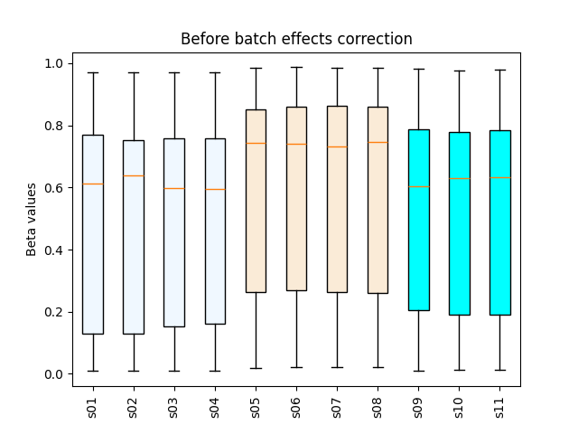
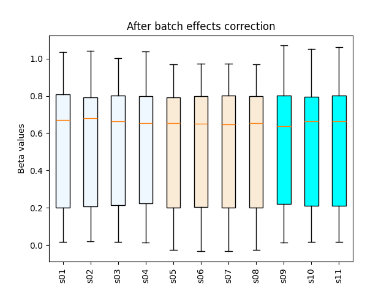

12. beta_combat
12.1. Overview
beta_combat removes batch effects from a CpG-by-sample Beta-value matrix
using ComBat.
If missing values are present, K-nearest-neighbor (KNN) imputation is applied before ComBat. The command writes a fully corrected matrix and, when missing values were present in the input, a second corrected matrix with the original missing-value positions restored.
12.2. Input Files
12.2.1. Beta matrix
The input matrix must be tab-delimited, with CpGs in rows and samples in columns. Compressed input is supported.
Requirements:
first column: unique CpG IDs
header: unique sample IDs
at least two samples
numeric methylation values
Example:
CpG_ID Sample_01 Sample_02 Sample_03
cg_001 0.831035 0.878022 0.794427
cg_002 0.249544 0.209949 0.234294
cg_003 0.845065 0.843957 0.840184
Values outside [0, 1] are retained, but a warning is reported.
12.2.2. Batch file
The batch file must contain at least two columns:
sample ID
batch/group ID
Comma-, tab-, or whitespace-delimited files are accepted. A header row is optional.
Example with header:
Sample,Group
Sample_01,plate_1
Sample_02,plate_1
Sample_03,plate_2
Every sample in the Beta matrix must have one batch assignment. Extra batch assignments for samples not present in the Beta matrix are ignored with a warning.
At least two distinct batch groups are required.
12.3. Usage
Basic usage:
beta_combat \
-i test_12_threebatch.beta.tsv.gz \
-g test_12_threebatch.batch.csv \
-o output
Useful options include:
-k,--neighbors– number of KNN neighbors used when imputing missing values (default: 3)--axis 1– search for neighboring samples after transposing the matrix--axis 0– search for neighboring CpGs--no_plot– skip the before/after box plots-o,--out_prefix,--output– output prefix
Display all options with:
beta_combat -h
12.4. Output
For output prefix output, the command always writes:
output.combat.tsv– batch-corrected Beta-value matrix
If the input contained missing values, it also writes:
output.combat_withNAs.tsv– corrected matrix with the original missing-value positions restored
Unless --no_plot is used, the command also writes:
output.boxplot.png– Beta-value distributions before correctionoutput.boxplot_combat.png– Beta-value distributions after correction
12.5. Figures
{kind=link}

{kind=link}

12.6. Example Data
12.7. Notes
CpG IDs and sample IDs in the Beta matrix must be unique.
Batch-file sample IDs must also be unique.
Batch groups containing fewer than two samples are allowed, but a warning is reported.
KNN imputation is used only when missing values are present.
If KNN imputation encounters an all-missing row or column that changes the matrix dimensions, the command exits with an error.
This command performs basic ComBat correction; biological covariates should be handled separately when required.
12.8. Reference
Johnson, W.E., Li, C., and Rabinovic, A. (2007). Adjusting batch effects in microarray expression data using empirical Bayes methods. Biostatistics, 8(1), 118–127. PubMed 16632515.